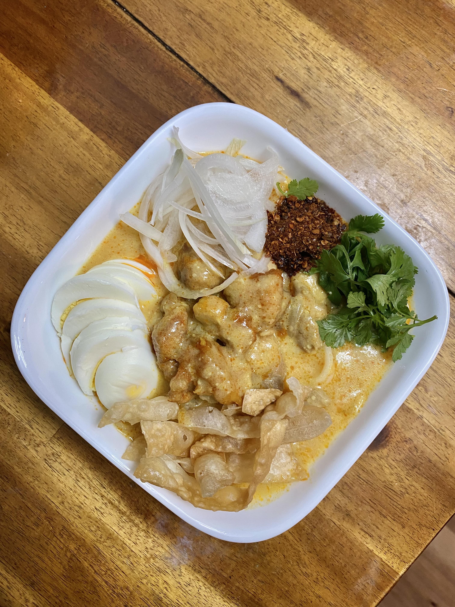

The useful HTML terms
| List | Usage |
|---|---|
| Unordered List | An unordered list is a list of elements without prioritizing any particular rule or restriction. Its usage in html starts with <ul>.Inside the tags, use <li> to put element in the list |
| Ordered List | Ordered list is a list of elemets that has alphabetic orders or numerical order based on defined condition. Its usage in html starts with <ol> |
| Definition List | It is a list with descriptions for each elements in the list. It is useful to emphasize unfamiliar words. Its usage in html starts with <dt>. |
Favorite Burmese Dish, Coconut Chicken Noodle Soup
Picture taken for commercial purposes by Kaung
Useful Terminology
- HTML
- * The HyperText Makeup Language. It is used to design the web document
- CSS
- * Cascading Style Sheets language is used to make create specific styles and presentation for web document
- FTP
- * File Transfer Protocol is useful for transferring files from a computer to another computer via established server/network
- SSH
- * Secure Shell Protcol is useful for remote operation of a computer